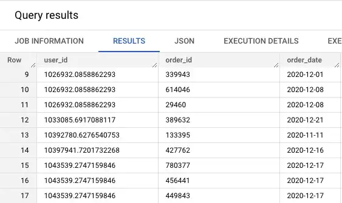

22 Google, Analytics, Analysis
TOC
- Misc
- Analysis
Misc
- Packages
- {googleAnalyticsR}
Analysis
- Questions
- Which cities represent the highest mobile traffic?
- Which landing pages are most popular for mobile users?
- What is the average session duration for mobile users?
- Do converters spend more time on the site and consume more content than non-converters?
- Which languages are converters most likely to speak?
- How many Android sessions came from converters versus non-converters?
- how is product quality affecting user retention? (Example 8)
has moved in the negative direction, find the root cause (Example 9) - How do you measure the success or health of
? (Example 10) - How many users have installed your app? (Example 11)
- By percentage, what are the top 10 countries that our app users are located in? (Example 12)
- By percentage, which device do most users use our app on? (Example 13)
- How many users are actively using the app on a daily basis? (Example 14)
- How many users are actively using the app on a daily basis during the month of September? (Example 15)
- How much are users in the United States spending on the app? (Example 16)
- How many users are encountering app crashes? (Example 17)
- How many users are uninstalling the app? (Example 18)
- Are crashes possibly affecting the user experience, causing them to uninstall? (Example 19)
- Which webpages are viewed most often?? (Example 20)
- Page Transition Matrix (Example 21)
- Session Conversion Rate/User Conversion Rate Calculation (Example 22)
- Signal Searching: Find features that are associated with conversion (Example 23)
- Power User Analysis (Example 24)
- Diagnosing path lengths in user journeys (Example 25)
- Segment Users Purchases as New Customers or Returning Customers (Example 26)
Example 1(total events and unique events)- Person 1: clicks the add to cart button 4 times during 1 session
- Person 2: clicks the add to cart button 2 times during 1 session
- Google Report
- total events: 6 (i.e. the button was pressed 6 times)
- unique events: 2 (i.e. the button was pressed in 2 different sessions)
- event category: product card, event action: click, event label: add to cart
Example 2(unique dimension combinations; same)
- The quick view event of Cap Black has been fired 1045 times but only 121 of those unique events
- A view filtered by Category, Action, and Label has the same values for unique events, sessions, and unique dimension combinations
- Index = Label
Example 3(unique dimension combinations; different)
- Think this is a breakdown of 1 session/user
- (Variables or top) The view is filter by Page and Category, Action, and Label
- Unique Events and Unique Dimension Combinations match
- (right or bottom) The view is filter by Page and only Category and Action
- Unique Events and Unique Dimension Combinations do NOT match
- Interpretation
- Left or Top (index = page, event label)
- Total Unique Events answers, How many total unique quickviews (event) were there per label per page?
- Labels can be repeatedly counted, just not on the same page
- Total Unique Dimension Combinations answers, ditto
- Total Unique Events answers, How many total unique quickviews (event) were there per label per page?
- Right or Bottom (index = page)
- Total Unique Events still answers the same question as above as if event label were included in the view
- Total Unique Dimension Combinations answers, How many total unique pages was a quickview (event) used?
- Left or Top (index = page, event label)
Example 4(multiple users)- Same basic scenario as example 3 (right or bottom pic) except its for 2 people
- Same calculations for Unique Events and Unique Dimension Combinations but those calculations for each user/session are summed together
- Same basic scenario as example 3 (right or bottom pic) except its for 2 people
Example 5(Index = Device)- Question: How many people interact with products in general by device?
- Answer: 2480 (Unique Dimension Combinations)
- Total Events: how many interactions overall per device?
- Unique Events: how many unique product and unique user interaction combinations are there per device?
- Unique Dimension Combinations: How many unique users are interacting with a product (i.e. products in general) per device?
Example 6(Interaction Rate, Avg. Clicks)- Find the interaction rate and average clicks for the Add to Cart button on the Sock product page
- Interaction Rate
- Steps
- Create a custom report with Page, Event Category, Event Action, Event Label
- For Page = Sock there are 100 sessions (i.e. the number of people who saw the Add to Cart button)
- This wasnt covered in detail, but in the examples, session always equaled unique dim combos. So Im guessing this number and the one below arent on the same lines of the report.
- For Page = Sock and Event Action = Add to Cart Click there are 80 Unique Dimension Combinations.
- For Page = Sock there are 100 sessions (i.e. the number of people who saw the Add to Cart button)
- Calculate IR = (80 * 100) / 100 = 80%
- Create a custom report with Page, Event Category, Event Action, Event Label
- Steps
- Average Click Rate
- Calculate avg_cr = total events / unique dimension combinations
Example 7(Funnel Test)- Optimize a contact form on your website
- Left Panel >> Explore >> Funnel Exploration
- Hypothesized Funnel
- People enter your website through page X.
- You suspect that after reading this page, they want to contact you so they visit the contact page
- People visit the contact page
- Complete contact form
- youve implemented an event in Google Analytics that measure the form completion
- People enter your website through page X.
- Compare segments in the Hypothesized Funnel where users did complete form and didnt complete the form
- The differences should show how you can optimize so that more people complete a form.
Example 8- how is product quality affecting user retention?
- Left Panel >> Explore >> Cohort Exploration
- Define a cohort that includes users who experienced an error and subsequently uninstalled your app.
- Steps:
- For Cohort inclusion, under Others, choose a custom error event youve defined.
- For Return criteria, under Others, choose the app_remove event.
Example 9has moved in the negative direction, find the root cause - Examples
- Creation of facebook user groups is down 20%. What will you do?
- Avg ETA is up by 3 minutes. How do you investigate the problem?
- Solution framework
- Clarify question/metrics
- Example: Avg ETA is up by 3 min
- How is the start time and end time defined?
- Is the start time at the time of initial request by the customer or when the customer enters the vehicle
- How is the start time and end time defined?
- Example: Avg ETA is up by 3 min
- Examine the time aspect of the problem
- Did the metric change suddenly or progressively?
- Internal issue? - bad data source, problem with data collection, bug in a processing script
- External issue? - seasonality, competitor new product or feature, industry trend, special event, natural disaster
- Have other related features/products in the company experienced the same change?
- Was there a recent change in the feature or product line?
- Segment by demographic, region, device, platform, language, etc.
- Decompose the metric and repeat steps 1-4 on each submetric
- e.g. daily active users (DAU) = existing users + resurrected users + new users - churned users
- Summarize approach
- List most probable causes and recommended solutions
- Clarify question/metrics
Example 10- How do you measure the success or health of
? - Examples
- How would measure the health of Mentions (Facebook celebrity app)? How can Facebook determine if its worth keeping it?
- Instagram is launching a new feature (links to products). How do you tell if its doing well?
- A job site wants to know how to measure the success of the job recommendations.
- Solution framework
- Clarify the function or goal of the feature/product
- ** Always do this one **
- What does it do? How is it used? Who is it for?
- Define metrics (no more than 3)
- Recommended 2 success, 1 guardrail (metric that shouldnt degrade when a new feature is added)
- success examples: daily active users, number of bookings, conversion rate, click-through-rate of recommendation results, percentage of users who ended up applying for a clicked-on job recommendation (sounds like a type of conversion rate)
- guardrail examples: cancellation rate, bounce rate
- Recommended 2 success, 1 guardrail (metric that shouldnt degrade when a new feature is added)
- Clarify the function or goal of the feature/product
- How do you measure the success or health of
Example 11- How many users have installed your app?
SELECT COUNT(DISTINCT user_pseudo_id) as users_installed
FROM `firebase-public-project.analytics_153293282.events_*`
WHERE event_name = "first_open"
AND _TABLE_SUFFIX BETWEEN '20180927' and '20181003'- BigQuery SQL + Firebase activate app
- * - tables come in an intraday format (one table for each day), you can combine several tables in one query using the wildcard symbol
- Best to combine with
_TABLE_SUFFIXin order to include a date range, because if you have a lot of data, * can be very expensive to execute without it
- Best to combine with
- Daily breakdown of the number of app installations
SELECT
FORMAT_DATE('%Y-%m-%d', PARSE_DATE('%Y%m%d', event_date)) AS date,
COUNT(DISTINCT user_pseudo_id) as users_installed
FROM `firebase-public-project.analytics_153293282.events_*`
WHERE event_name = "first_open"
AND _TABLE_SUFFIX BETWEEN '20180927' and '20181003'
GROUP BY date
ORDER BY dateOutputs: date and users_installed
Example 12- By percentage, what are the top 10 countries that our app users are located in?
WITH
--Compute for the numerators
country_counts AS (
SELECT
geo.country,
COUNT(DISTINCT user_pseudo_id) AS users
FROM `firebase-public-project.analytics_153293282.events_*`
WHERE event_name = "first_open"
AND _TABLE_SUFFIX BETWEEN '20180927' and '20181003'
AND geo.country <> ""
GROUP BY geo.country
),
--Compute for the denominators
user_counts AS (
SELECT
COUNT(DISTINCT user_pseudo_id)
FROM `firebase-public-project.analytics_153293282.events_*`
WHERE event_name = "first_open"
AND _TABLE_SUFFIX BETWEEN '20180927' and '20181003'
),
--Compute for the percentages
percent AS (
SELECT
country,
ROUND(users / (SELECT * FROM user_counts), 4) AS percent_users
FROM country_counts
)
SELECT * FROM percent
ORDER BY percent_users DESC
LIMIT 10- BigQuery SQL + Firebase activated App
- Outputs: country and percent_users
- * - tables come in an intraday format (one table for each day), you can combine several tables in one query using the wildcard symbol
- Best to combine with
_TABLE_SUFFIXin order to include a date range, because if you have a lot of data, * can be very expensive to execute without it
- Best to combine with
Example 13- By percentage, which device do most users use our app on?
WITH
device_counts AS (
SELECT
device.category,
COUNT(DISTINCT user_pseudo_id) AS users
FROM `firebase-public-project.analytics_153293282.events_*`
WHERE event_name = "first_open"
AND _TABLE_SUFFIX BETWEEN '20180927' and '20181003'
AND device.category <> ""
GROUP BY device.category
),
user_counts AS (
SELECT
COUNT(DISTINCT user_pseudo_id)
FROM `firebase-public-project.analytics_153293282.events_*`
WHERE event_name = "first_open"
AND _TABLE_SUFFIX BETWEEN '20180927' and '20181003'
),
percent AS (
SELECT
category,
ROUND(users / (SELECT * FROM user_counts), 4) AS percent_users
FROM device_counts
)
SELECT * FROM percent
ORDER BY percent_users DESC- BigQuery SQL + Firebase activated App
- Outputs: category and percent_users
- * - tables come in an intraday format (one table for each day), you can combine several tables in one query using the wildcard symbol
- Best to combine with
_TABLE_SUFFIXin order to include a date range, because if you have a lot of data, * can be very expensive to execute without it
- Best to combine with
Example 14- How many users are actively using the app on a daily basis?
WITH
daily_user_count AS (
SELECT
FORMAT_DATE('%Y-%m-%d', PARSE_DATE('%Y%m%d', event_date)) AS date,
COUNT(DISTINCT user_pseudo_id) AS active_users
FROM `firebase-public-project.analytics_153293282.events_*`
WHERE event_name = "user_engagement"
AND _TABLE_SUFFIX BETWEEN '20180901' and '20180930'
GROUP BY date
)
SELECT AVG(active_users) AS daily_active_users
FROM daily_user_count- BigQuery SQL + Firebase activated App
- Outputs: category and percent_users
- * - tables come in an intraday format (one table for each day), you can combine several tables in one query using the wildcard symbol
- Best to combine with
_TABLE_SUFFIXin order to include a date range, because if you have a lot of data, * can be very expensive to execute without it
- Best to combine with
Example 15- How many users are actively using the app on a daily basisd during the month of September?
WITH
daily_user_count AS (
SELECT
FORMAT_DATE('%Y-%m-%d', PARSE_DATE('%Y%m%d', event_date)) AS date,
COUNT(DISTINCT user_pseudo_id) AS active_users
FROM `firebase-public-project.analytics_153293282.events_*`
WHERE event_name = "user_engagement"
AND _TABLE_SUFFIX BETWEEN '20180901' and '20180930'
GROUP BY date
)
SELECT AVG(active_users) AS daily_active_users
FROM daily_user_count- Outputs: daily_active_users
- Also Reports >> Lifecycle >> Engagement
- DAU calculation depends on definition of Active User
- Here Active User = a user who did any user_engagement action in the day
- Also see Example 9, Segments, Dimensions, and Metrics >> Metrics
- BigQuery SQL + Firebase activated App
- Outputs: category and percent_users
- * - tables come in an intraday format (one table for each day), you can combine several tables in one query using the wildcard symbol
- Best to combine with
_TABLE_SUFFIXin order to include a date range, because if you have a lot of data, * can be very expensive to execute without it
- Best to combine with
Example 16- How much are users in the United States spending on the app?
SELECT SUM(user_ltv.revenue) AS revenue
FROM `firebase-public-project.analytics_153293282.events_*`
WHERE event_name = "in_app_purchase"
AND geo.country = "United States"
AND _TABLE_SUFFIX BETWEEN '20180901' and '20180930'- BigQuery SQL + Firebase activated App
- Outputs: revenue
- * - tables come in an intraday format (one table for each day), you can combine several tables in one query using the wildcard symbol
- Best to combine with
_TABLE_SUFFIXin order to include a date range, because if you have a lot of data, * can be very expensive to execute without it
- Best to combine with
Example 17- How many users are encountering app crashes?
SELECT COUNT(DISTINCT user_pseudo_id) AS users
FROM `firebase-public-project.analytics_153293282.events_*`,
UNNEST(event_params) e
WHERE event_name = 'app_exception'
AND _TABLE_SUFFIX BETWEEN '20180901' and '20180930'
AND e.key = 'fatal' AND e.value.int_value = 1- BigQuery SQL + Firebase activated App
- Outputs: users
- * - tables come in an intraday format (one table for each day), you can combine several tables in one query using the wildcard symbol
- Best to combine with
_TABLE_SUFFIXin order to include a date range, because if you have a lot of data, * can be very expensive to execute without it
- Best to combine with
Example 18- How many users are uninstalling the app?
WITH
--List of users who installed in Sept
sept_cohort AS (
SELECT DISTINCT user_pseudo_id,
FORMAT_DATE('%Y-%m-%d', PARSE_DATE('%Y%m%d', event_date)) AS date_first_open,
FROM `firebase-public-project.analytics_153293282.events_*`
WHERE event_name = 'first_open'
AND _TABLE_SUFFIX BETWEEN '20180901' and '20180930'
),
--Get the list of users who uninstalled
uninstallers AS (
SELECT DISTINCT user_pseudo_id,
FORMAT_DATE('%Y-%m-%d', PARSE_DATE('%Y%m%d', event_date)) AS date_app_remove,
FROM `firebase-public-project.analytics_153293282.events_*`
WHERE event_name = 'app_remove'
AND _TABLE_SUFFIX BETWEEN '20180901' and '20181007'
),
--Join the 2 tables and compute for # of days to uninstall
joined AS (
SELECT a.*,
b.date_app_remove,
DATE_DIFF(DATE(b.date_app_remove), DATE(a.date_first_open), DAY) AS days_to_uninstall
FROM sept_cohort a
LEFT JOIN uninstallers b
ON a.user_pseudo_id = b.user_pseudo_id
)
--Compute for the percentage
SELECT
COUNT(DISTINCT
CASE WHEN days_to_uninstall > 7 OR days_to_uninstall IS NULL THEN user_pseudo_id END) /
COUNT(DISTINCT user_pseudo_id)
AS percent_users_7_days
FROM joined- BigQuery SQL + Firebase activated App
- Outputs: percent_users_7_days
- the percentage of users who still have the app after a week, among the cohort who installed it in September
- i.e. 7-day retention rate among September installers
- Good or Bad?
- Research industry benchmarks
- Monitoring how the trend progresses over time
- the percentage of users who still have the app after a week, among the cohort who installed it in September
- * - tables come in an intraday format (one table for each day), you can combine several tables in one query using the wildcard symbol
- Best to combine with
_TABLE_SUFFIXin order to include a date range, because if you have a lot of data, * can be very expensive to execute without it
- Best to combine with
Example 19- Are crashes possibly affecting the user experience, causing them to uninstall?
WITH
--List of users who installed in Sept
sept_cohort AS (
SELECT DISTINCT user_pseudo_id,
FORMAT_DATE('%Y-%m-%d', PARSE_DATE('%Y%m%d', event_date)) AS date_first_open,
FROM `firebase-public-project.analytics_153293282.events_*`
WHERE event_name = 'first_open'
AND _TABLE_SUFFIX BETWEEN '20180901' and '20180930'
),
--Get the list of users who uninstalled
uninstallers AS (
SELECT DISTINCT user_pseudo_id,
FORMAT_DATE('%Y-%m-%d', PARSE_DATE('%Y%m%d', event_date)) AS date_app_remove,
FROM `firebase-public-project.analytics_153293282.events_*`
WHERE event_name = 'app_remove'
AND _TABLE_SUFFIX BETWEEN '20180901' and '20181007'
),
--Get the list of users who experienced crashes
users_crashes AS (
SELECT DISTINCT user_pseudo_id,
FORMAT_DATE('%Y-%m-%d', PARSE_DATE('%Y%m%d', event_date)) AS date_crash,
FROM `firebase-public-project.analytics_153293282.events_*`,
UNNEST(event_params) e
WHERE event_name = 'app_exception'
AND _TABLE_SUFFIX BETWEEN '20180901' and '20181007'
AND e.key = 'fatal' AND e.value.int_value = 1
),
--Join the 3 tables
joined AS (
SELECT a.*,
b.date_app_remove,
DATE_DIFF(DATE(b.date_app_remove), DATE(a.date_first_open), DAY) AS days_to_uninstall,
c.date_crash
FROM sept_cohort a
LEFT JOIN uninstallers b
ON a.user_pseudo_id = b.user_pseudo_id
LEFT JOIN users_crashes c
ON a.user_pseudo_id = c.user_pseudo_id
)
--Compute the percentage
SELECT
COUNT(DISTINCT
CASE WHEN days_to_uninstall <= 7 AND date_crash IS NOT NULL
THEN user_pseudo_id END)
/ COUNT(DISTINCT
CASE WHEN days_to_uninstall <= 7 THEN user_pseudo_id END)
AS percent_users_crashes
FROM joined- BigQuery SQL + Firebase activated App
- Outputs: percent_users_crashes
- may be useful to compare it versus non-installers to make a more reasonable conclusion
- create an app removal rate model to determine the predictors of app removal
- * - tables come in an intraday format (one table for each day), you can combine several tables in one query using the wildcard symbol
- Best to combine with
_TABLE_SUFFIXin order to include a date range, because if you have a lot of data, * can be very expensive to execute without it
- Best to combine with
Example 20- Which webpages are viewed most often?
-- pulling user page views from GA4 events
WITH base_table AS (
-- pulls relevant columns from relevant dates to decrease the size of data scanned
SELECT
event_name,
event_date,
event_timestamp,
user_pseudo_id,
user_id,
device,
geo,
traffic_source,
event_params,
user_properties
FROM
`bigquery-public-data.ga4_obfuscated_sample_ecommerce.events_*`
WHERE
_table_suffix >= '20210101'
AND event_name IN ('page_view')
)
-- unnests event parameters to get to relevant keys and values
, unnested_events AS (
SELECT
event_date AS date,
event_timestamp AS event_timestamp_microseconds,
user_pseudo_id,
MAX(CASE WHEN c.key = 'ga_session_id' THEN c.value.int_value END) AS visitID,
MAX(CASE WHEN c.key = 'ga_session_number' THEN c.value.int_value END) AS visitNumber,
MAX(CASE WHEN c.key = 'page_title' THEN c.value.string_value END) AS page_title,
MAX(CASE WHEN c.key = 'page_location' THEN c.value.string_value END) AS page_location
FROM
base_table,
UNNEST (event_params) c
GROUP BY 1,2,3
)
SELECT
page_title,
COUNT(*) as event_count,
COUNT(DISTINCT user_pseudo_id) as users
FROM
unnested_events
GROUP BY 1
ORDER BY 2 DESC- From Looking for Power User Journeys
- View of nesting schema for event_params

- Each event_param has a key (name of event) and a value
Example 21- Page Transition Matrix
-- pulling user page views from GA4 events
WITH base_table AS (
-- pulls relevant columns from relevant dates to decrease the size of data scanned
SELECT
event_name,
event_date,
event_timestamp,
user_pseudo_id,
user_id,
device,
geo,
traffic_source,
event_params,
user_properties
FROM
`bigquery-public-data.ga4_obfuscated_sample_ecommerce.events_*`
WHERE
_table_suffix >= '20210101'
AND event_name IN ('page_view')
)
, unnested_events AS (
-- unnests event parameters to get to relevant keys and values
SELECT
event_date AS date,
event_timestamp AS event_timestamp_microseconds,
user_pseudo_id,
MAX(CASE WHEN c.key = 'ga_session_id' THEN c.value.int_value END) AS visitID,
MAX(CASE WHEN c.key = 'ga_session_number' THEN c.value.int_value END) AS visitNumber,
MAX(CASE WHEN c.key = 'page_title' THEN c.value.string_value END) AS page_title,
MAX(CASE WHEN c.key = 'page_location' THEN c.value.string_value END) AS page_location
FROM
base_table,
UNNEST (event_params) c
GROUP BY 1,2,3
)
, unnested_events_categorised AS (
-- categorizing Page Titles into PDPs and PLPs
SELECT
*,
CASE WHEN ARRAY_LENGTH(SPLIT(page_location, '/')) >= 5
AND
CONTAINS_SUBSTR(ARRAY_REVERSE(SPLIT(page_location, '/'))[SAFE_OFFSET(0)], '+')
AND (LOWER(SPLIT(page_location, '/')[SAFE_OFFSET(4)]) IN
('accessories','apparel','brands','campus+collection','drinkware',
'electronics','google+redesign',
'lifestyle','nest','new+2015+logo','notebooks+journals',
'office','shop+by+brand','small+goods','stationery','wearables'
)
OR
LOWER(SPLIT(page_location, '/')[SAFE_OFFSET(3)]) IN
('accessories','apparel','brands','campus+collection','drinkware',
'electronics','google+redesign',
'lifestyle','nest','new+2015+logo','notebooks+journals',
'office','shop+by+brand','small+goods','stationery','wearables'
)
)
THEN 'PDP'
WHEN NOT(CONTAINS_SUBSTR(ARRAY_REVERSE(SPLIT(page_location, '/'))[SAFE_OFFSET(0)], '+'))
AND (LOWER(SPLIT(page_location, '/')[SAFE_OFFSET(4)]) IN
('accessories','apparel','brands','campus+collection','drinkware',
'electronics','google+redesign',
'lifestyle','nest','new+2015+logo','notebooks+journals',
'office','shop+by+brand','small+goods','stationery','wearables'
)
OR
LOWER(SPLIT(page_location, '/')[SAFE_OFFSET(3)]) IN
('accessories','apparel','brands','campus+collection','drinkware',
'electronics','google+redesign',
'lifestyle','nest','new+2015+logo','notebooks+journals',
'office','shop+by+brand','small+goods','stationery','wearables'
)
)
THEN 'PLP'
ELSE page_title
END AS page_title_adjusted
FROM
unnested_events
)
, ranked_screens AS (
-- prepares additional data points for analytics to understand transitions between the previous, current and following pages
SELECT
*,
DENSE_RANK() OVER (PARTITION BY user_pseudo_id, visitID ORDER BY event_timestamp_microseconds ASC) page_rank,
LAG(page_title_adjusted,1) OVER (PARTITION BY user_pseudo_id, visitID ORDER BY event_timestamp_microseconds ASC) previous_page,
LEAD(page_title_adjusted,1) OVER (PARTITION BY user_pseudo_id, visitID ORDER BY event_timestamp_microseconds ASC) next_page
FROM
unnested_events_categorised
)
, screen_summary AS (
-- check the last page number viewed on a session
-- aggregate all screens per session, which will be helpful in identifying power users
SELECT
*,
MAX(page_rank) OVER (PARTITION BY user_pseudo_id, visitID) last_page_rank,
ARRAY_AGG(page_title_adjusted) OVER (PARTITION BY user_pseudo_id, visitID) pages_on_a_visit
FROM
ranked_screens
)
, screen_summary_agg AS (
-- cleans up pages_on_a_visit field
SELECT * EXCEPT(pages_on_a_visit),
ARRAY_TO_STRING(ARRAY(SELECT DISTINCT * FROM UNNEST(pages_on_a_visit) ORDER BY 1 ASC), '>>') AS screens_on_a_visit
FROM
screen_summary
)
SELECT
-- first time a page is viewed in a session
*,
MIN(page_rank) OVER (PARTITION BY user_pseudo_id, visitID, page_title) AS page_rank_session_first_seen
FROM
screen_summary_agg- A Page Transition Matrix shows the number of transitions from top-n pages (row) to top-n pages (column)
- In rows, transition matrix has the current page of reference, or
page_title_adjustedas rows of a Pivot Table, and in columns a page that follows, ornext_page. The values are the number of transitions,record_countfrom row to column. (see right side panel)
- CTE column locations
- page_title_adjusted > unnested_events_categorised
- next_page > ranked_screens
- record_count > not in query
- Example: if a user lands on, for example, a PLP or Store Search Result page, where would they likely go next.
- There were 40,697 transitions from PLP to null page, which is an exit from the website
- A higher share of users browse from PLP to PLP 62,533/140,608=44%, and less from PLP to PDP 21,633/140,608=15%, which means that users browse Product Listing Pages without showing a significant interest to click on a PLP item. (very bad if typical ecommerce site)
- CTE column locations
- Misc
- From Looking for Power User Journeys
- Grouping by user_pseudo_id, visitID constitutes a session
- If you want percent of total transitions by starting page (i.e. row wise total), see article
- CTE
- base_table
- pulls relevant columns from relevant dates to decrease the size of data scanned
- unnested_events
- unnests event parameters to get to relevant keys and values
- See previous example for schema of event_params
- unnests event parameters to get to relevant keys and values
- unnested_events_categorized
- categorizing Page Titles into PDPs and PLPs
- Creates a new categorical column, page_title_adjusted, that has value, PDP, when a substring in page_location is one of a set of words, and PLP when its not, and the value of page_title otherwise.
- PLP is the product listing page and PDP is the product details page (i.e. items on the PLP)
- See SQL >> Strings for details on the various functions that are used
- ranked_screens
- prepares additional data points for analytics to understand transitions between the previous, current and following pages
- Within each user session
- webpages are ranked by the event (page visit) timestamp
- variables for previous and next webpage visit are created
- screen_summary
- Finds last webpage viewed per session
- Think ARRAY_AGG puts all the webpage names in a list/array for each session
- screen_summary_agg
- ARRAY_TO_STRING coerces the list/array of webpage names to a string with a >> delimiter between array values
- base_table
- Final query
- Creates column for the first time each page is viewed in each session
- Note that it also groups by page_title instead of just the session variables, user_pseudo_id and visitID.
- It should be a rank value. The rank indicates where its first seen in the user journey.
- i.e. low rank = beginning of sesssion, high rank = end of session
- Used in Example 25
- Creates column for the first time each page is viewed in each session
Example 22- Session Conversion Rate/User Conversion Rate Calculation (Page View)
- From Looking for Power User Journeys
- is_checkout_session:
CONTAINS_TEXT(screens_on_visit, 'Checkout Confirmation')- Indicator variable that indicates users that have converted
- If the checkout page isnt tracked, you can explore events outside of
screen_view, such asecommerce_purchaseorpurchase,checkout_progress, etc.
- Session Conversion Rate:
COUNT_DISTINCT(IF(is_checkout_session, session_id, null))/COUNT_DISTINCT(_session_id) - User Conversion Rate:
COUNT_DISTINCT(IF(is_checkout_session, user_pseudo_id, null))/COUNT_DISTINCT(user_pseudo_id)
- Session Conversion Rate/User Conversion Rate Calculation (Page View)
Example 23- Signal Searching: Find features that are associated with conversion
- From Looking for Power User Journeys
- Questions
- How many users do it?
- You can see whether or not enough users are engaging with the page or a feature and if theres a potential for improvement
- i.e. if almost all users are doing it, then there wont be much room for improvement.
- Youll also need a decent sample size if youre measuring correlation. Since this is ecommerce, I doubt this will be a problem.
- You can see whether or not enough users are engaging with the page or a feature and if theres a potential for improvement
- How their conversion looks like vs the users who dont do what you want them to do
- so you can hypothesize whether or not engaging more users with this part of a journey can have a positive impact on the business, or on conversion in this case.
- How many users do it?
- Answer template
- Users who do X tend to have a # times higher conversion rate compared to users who dont do X. That said, theres only Y percent of users who do X. We can either analyze the behavior of those users and try to attract more similar users to use our product, or funnel more users to do X.
- Process:
- Filter conversion metrics (See example 22) by page or feature
- Examine conversion range between those that visit the page/use the feature and those that dont
- Example: Over this period,
- Between 3.97 5.73% of users visit the Store search results page (a proxy for search), but
- their user conversion rate is 0.9 - 7.3%
- Users who dont visit that page have a user conversion rate between 0.5% - 2.4%
- Me: I think with this webpage/feature it would be safe to ignore the time aspect and perform difference-in-means test or a cohens d standardized test to see if and how much these conversion rates differ.
- Although, viewing as line chart can indicate when various periods of seasonality for product are.
- Between 3.97 5.73% of users visit the Store search results page (a proxy for search), but
- Example: Over this period,
- When you find a sizable difference between these groups. Ask:
- What else makes those users different?
- What else they do on the app?
- Where they come from?
-
- Beware: making the page visitation/feature usage mandatory (e.g. a user must visit the login page before purchasing) usually will decrease conversion
- Can also look at webpages/features that adversely affect conversion. (e.g. Page Unavailable)
- Might be useful to see how these events affect CLV, retention, etc.
Example 24- Power User Analysis
- % users vs views
- Shows what percent of users view a page/feature vs number of views for a given time period
- % users vs views
- From Looking for Power User Journeys
- Also see Product Development >> Metrics >> Growth Metrics >> Power User Curve
- You either want the mode of these charts to shift to the right or you want a smile pattern with modes on the far left and far right
- Users in the far right mode are considered power users.
- Identify features correlated with conversion (example 23) and moniter these features power user curves to measure progress in producing more power users and therefore more conversions
- Can also be broken down be cohorts (see Algorithms, Product >> Cohort Analysis)
- Product Details Pages (PDP)
- Around 50% of users in January 2021 viewed 2 PDPs
- See example 21 >> CTE >> unnested_events_categorized for SQL code to create a PDP category. (collapses various product detail webpages into a PDP category)
- An online business wants mode of this chart to move to the right (i.e. funnel users to PDP pages), since view of PDPs are positively correlated with conversion
- Power User Analysis
Example 25- Diagnosing path lengths in user journeys
- Long user journeys may be because of active browsing or it may be a sign of a user getting lost
- From Looking for Power User Journeys
- When a user first visits a webpage, which is necessary for conversion (e.g. Product Listing Page), towards the end of a long journey, then something has likely gone wrong.
- i.e. theyre likely have trouble finding the PLP.
- See Example 21 >> final query for code that ranks each webpage in the user journey according to when its first visited. (most of the cleaning code in the CTE will also likely be required.)
- PLP: % session vs first seen rank during a session
- Y axis: % of sessions
- X axis: page_rank_session_first_seen
- Potential ranks for a webpage during a session
- Low ranks = the webpage is first viewed towards the beginning of the session
- High ranks = the webpage is first viewed towards the end of the session
- ** Note that the ranks on the x-axis are ordered according to their y-axis values (highest to lowest) **
- So dont interpret the chart as a distribution
- Interpretation: a large proportion of user sessions are viewing the PLP very early in the user journey, theyre likely landing on this page from paid search (e.g. Google)
- i.e. the ranks with the highest % session values are low ranks (Top 5 ranks are 1,3,4,5,6)
- Store Search Page: % session vs first seen rank during a session
- Same axis descriptions as in PLP example
- Interpretation: The search page is visited mostly as the 3rd, 4th, or 5th page visited, so its early enought that users are likely not having a tough time finding it and may and prefer to engage with it rather than browse the navigation bar.
- Checkout page: % session vs first seen rank during a session

- Same axis descriptions as in PLP example
- Interpretation: There is large range (10 to 43) of relatively equally likely path lengths before conversion
- Diagnosing path lengths in user journeys
Example 26: Segment User Purchases as New Customers or Returning Customers- Customers are users that have purchased (i.e. converted)
- Data is Google Merchandise Store
- Build a base table with orders by customer and date
WITH base_table AS (
-- orders by customer and date
SELECT
user_pseudo_id AS user_id,
ecommerce.transaction_id AS order_id,
PARSE_DATE('%Y%m%d', event_date) AS order_date
FROM
`bigquery-public-data.ga4_obfuscated_sample_ecommerce.events_*`
WHERE
event_name = 'purchase'
AND ecommerce.transaction_id <> '(not set)'
GROUP BY
1,
2,
3
)Data is filtered to only include rows representing purchases with a valid transaction id.
- Google Analytics will store a default (not set) value if the data isnt accessible, isnt being tracked properly, or for other reasons.
Results are then grouped across all three dimensions so that each row represents a unique order per client per date
Label customers as new or returning
SELECT
*,
CASE
WHEN DENSE_RANK() OVER(PARTITION BY user_id ORDER BY order_date) = 1
THEN 'new' ELSE 'returning'
END
AS customer_type
FROM
`datastic.new_existing.base_table`DENSE_RANK()allows us to assign the same rank to multiple orders made on the same day.- On September 12, 2020, the customer 13285520 makes the first order and was given the label new.
- Then, on December 12, 2020, this same customer makes a second order, which resulted in having a returning type.